各機能をスクリーンショット付きでわかりやすく解説します
← トップページに戻る
アプリを初めて起動すると、5つのステップで世帯情報を設定します。
入力した内容をもとに、あなたの家族に合った備蓄量を自動で計算します。
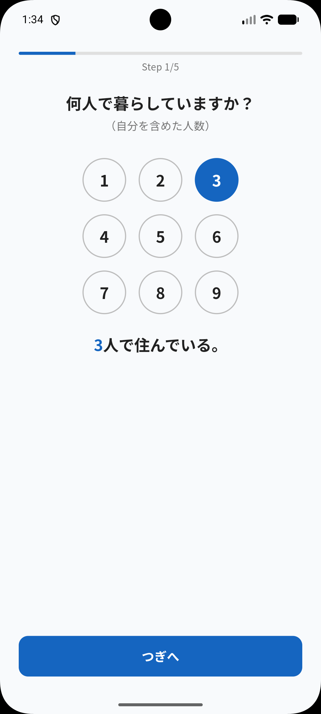
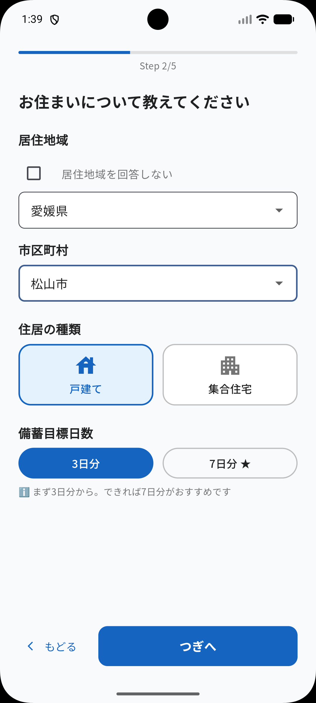
まず何人で暮らしているか、各メンバーの性別・年齢層を登録します。
続いて居住地域・住居タイプ（戸建て／集合住宅）・備蓄の目標日数を選びましょう。
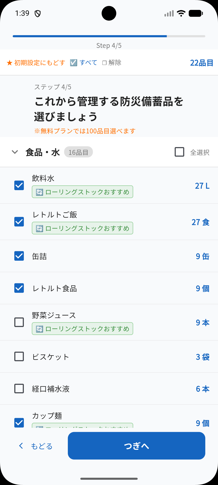
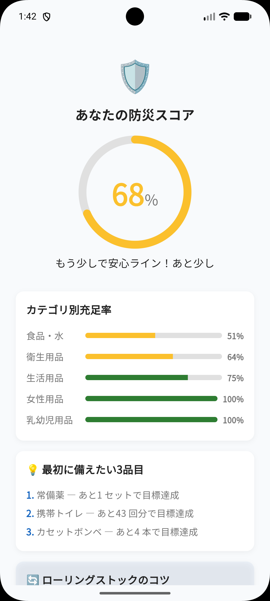
管理したい品目にチェックを入れるだけで完了です。必要な数量は世帯情報から自動で計算されます。
設定が完了すると、現在の備蓄状況を100点満点で表す「防災スコア」が確認できます。
アプリを開くと最初に表示されるダッシュボードです。今の備蓄状況をざっくり把握できます。
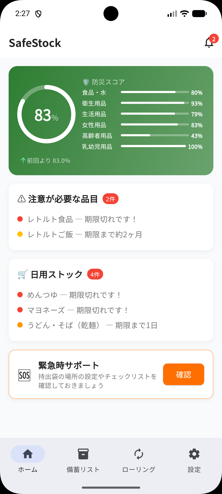
防災スコアとカテゴリ別の充足率が一目でわかります。
期限が近い品目や補充が必要な日用品はアラートとして表示されます。
防災備蓄品と日用ストックをまとめて管理できる画面です。
上部のタブで「防災備蓄」「日用ストック」「共有備蓄」を切り替えられます。
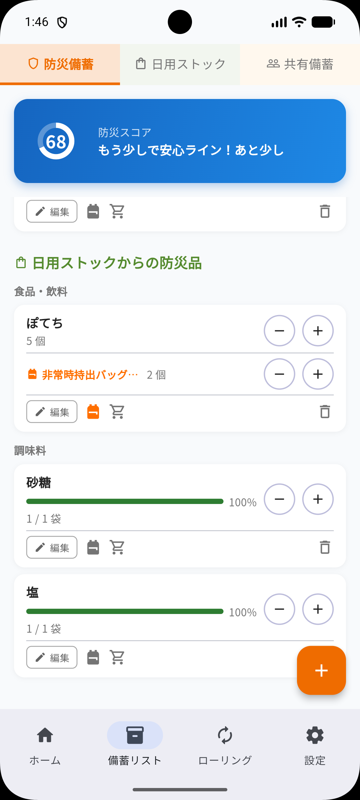
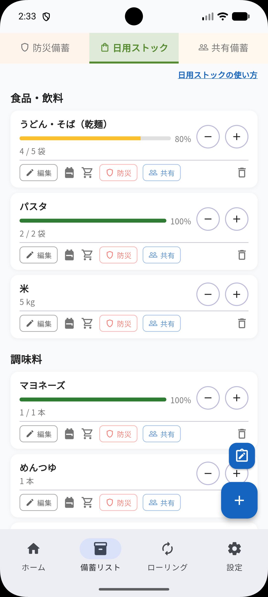
「＋」「−」ボタンで在庫数を増減できます。
各カードのバーが長いほど目標数量を満たしている状態です。
日用ストックの各カードには「防災」「共有」のタグボタンがあります。編集画面からも切り替えられます。
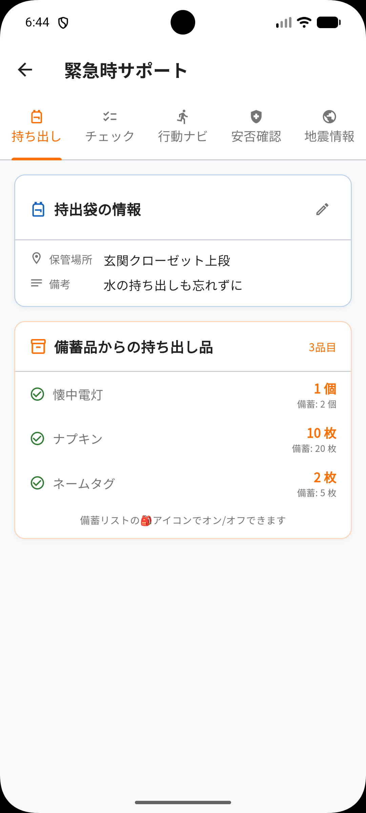
バッグアイコンをタップすると、その品目が緊急持ち出し袋に登録されます。防災備蓄・日用ストックどちらの品目でも登録できます。
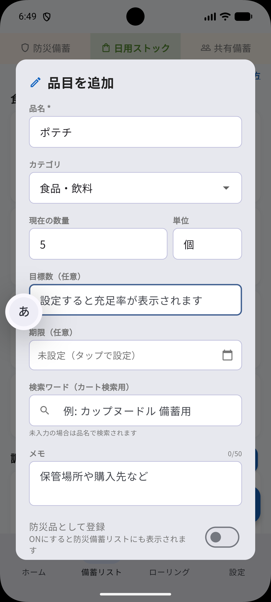
日用ストックは品名を自由に入力して追加できます。定番品目にないものはこちらから登録してください。
備蓄品の賞味期限を一覧で管理する画面です。
期限が近づいたら日常の食事で消費し、補充することで常に新鮮な備蓄を保てます。
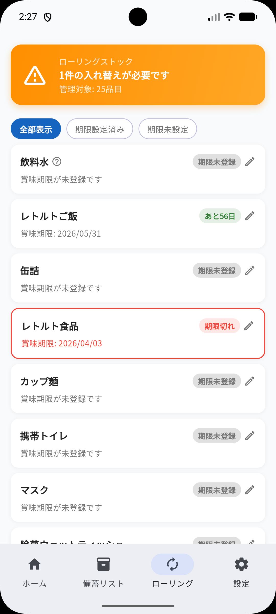
賞味期限を登録した品目が期限の近い順に並びます。何を先に使えばよいかひと目でわかります。
日用ストックに登録した品目をそのまま買い物リストとして活用できます。
スーパーやドラッグストアでの買い物をスマートにサポートします。
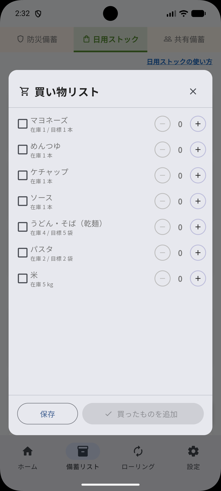
日用ストックタブを開き、右下の「＋」ボタンのひとつ上にあるメモアイコンをタップすると買い物リストが表示されます。
いざというときに役立つ5つの機能をまとめたタブです。
「持ち出し」「チェック」「行動ナビ」「安否確認」「地震情報」の各タブで構成されています。
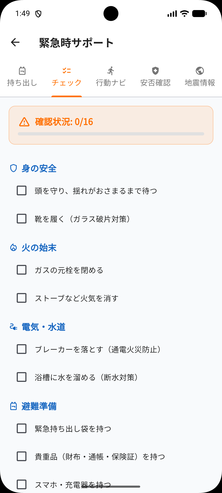
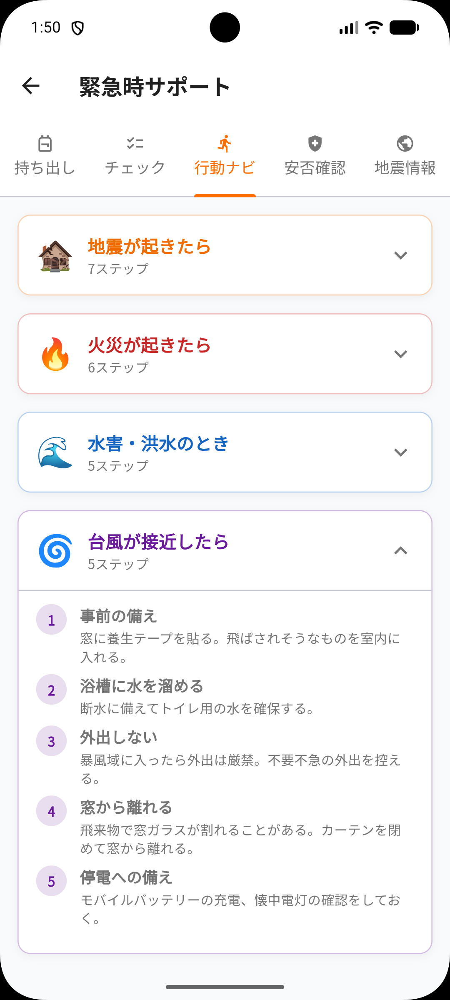
チェックタブ：災害発生直後にやるべきことがカテゴリ別にまとめられています。
「身の安全」「火の始末」「電気・水道」「避難準備」など、慌てずに確認できます。
行動ナビタブ：地震・火災・水害・台風など、災害の種類ごとに取るべき行動をステップ形式でわかりやすく解説します。
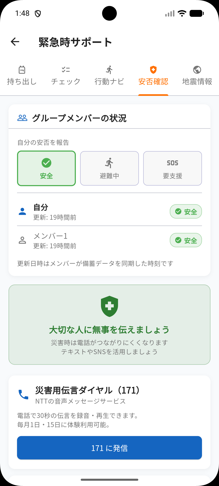
共有グループのメンバーと安否状況をリアルタイムで共有できます。
「安全」「避難中」「要支援（SOS）」の3つから自分の状況を選んで報告します。